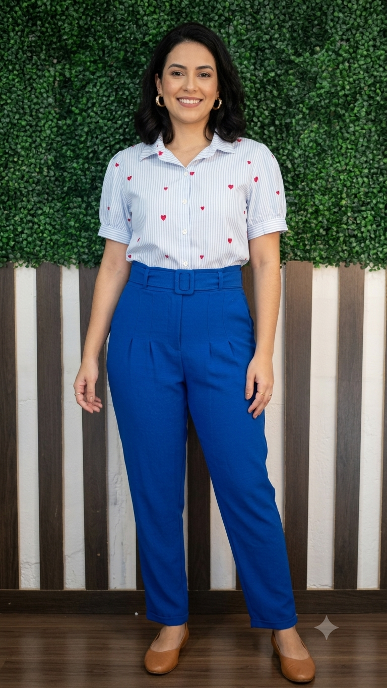
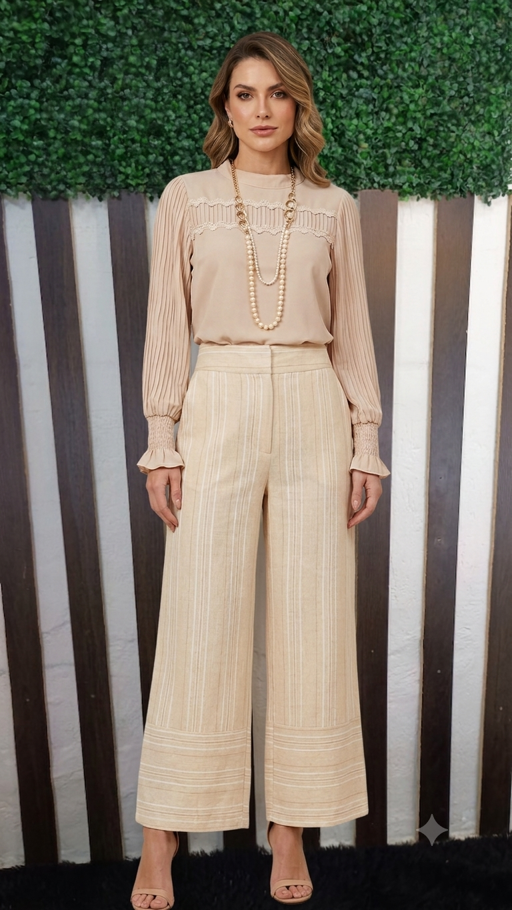

Nossa Vitrine
Uma amostra dos nossos garimpos e peças impecáveis


Seu brechó online em Bragança Paulista! Peças selecionadas com o maior carinho, higienizadas e prontas para você arrasar com consumo consciente.
Clientes confiam no Brechó Garimpeira de Cabide para encontrar peças lindas, limpas, cheirosas e com excelente custo-benefício!
Ver Mais AvaliaçõesUma amostra dos nossos garimpos e peças impecáveis


Trabalhamos com peças exclusivas e de alta rotatividade. Para garantir seus garimpos antes que todo mundo leve, acompanhe e compre direto nas nossas transmissões ao vivo no Facebook e no TikTok!
O propósito por trás de cada cabide
O Brechó Garimpeira de Cabide nasceu da paixão por garimpar o melhor da moda e dar uma nova história a peças incríveis. Acreditamos em uma moda sustentável, inteligente e que valoriza a elegância feminina. Cada peça de nossa curadoria é escolhida a dedo, higienizada com cuidado e passada para chegar até você com muito carinho.
Transparência e respeito para garantir a melhor experiência
Por trabalharmos com desapegos e peças únicas de segunda mão, nossa política prioriza a transparência.
Entre em contato conosco em até 7 dias corridos após o recebimento das suas peças.
A peça deve ser mantida com etiqueta intacta e sem indícios de uso.
Fale diretamente conosco pelo nosso WhatsApp de atendimento.
Venha retirar suas sacolinhas ou conhecer nosso espaço em Bragança Paulista!
📍 Rua Voluntário Antônio dos Santos, 594
Vila Bianchi • Bragança Paulista - SP